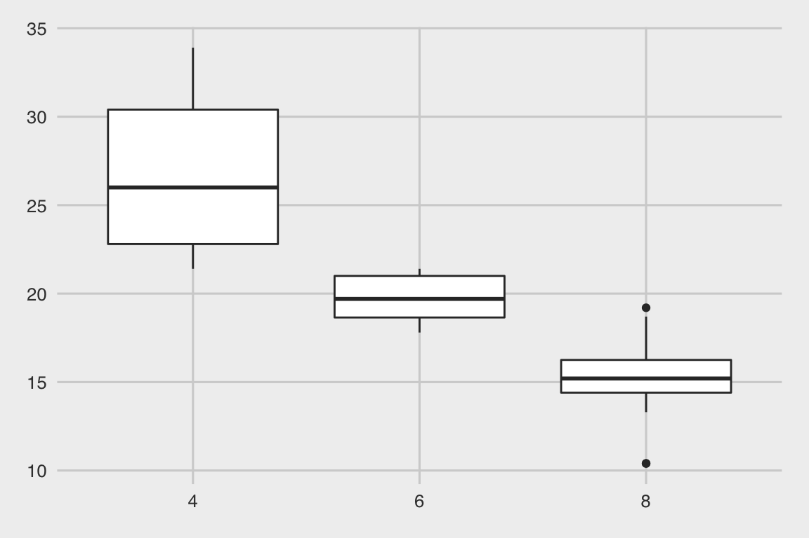

Today we will:
Now that we’ve learned how to create chart elements with geom_*() (where * could be any element), let’s add some color to our visualizations. We added elements using the + operator, and we can add color and themes using + as well!
Themes are a quick way to get a great-looking plot. Download the ggthemes package, load it, and just add them on!
library(ggthemes)
ggplot(data = mtcars, aes(x = factor(cyl), y = mpg)) +
geom_boxplot() +
theme_fivethirtyeight()
See the documentation for a list of available themes.
Ranking visual cues, from position (strongest) to color hue (weakest): docs/day-1_files/figure-html/visual-cues.png (link not working rn) Source: Nathan Yau, Data Points, 2013